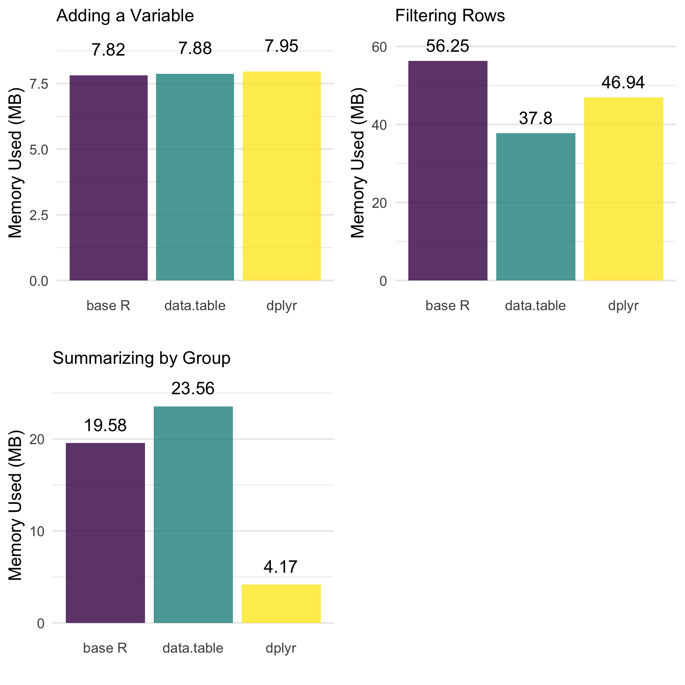
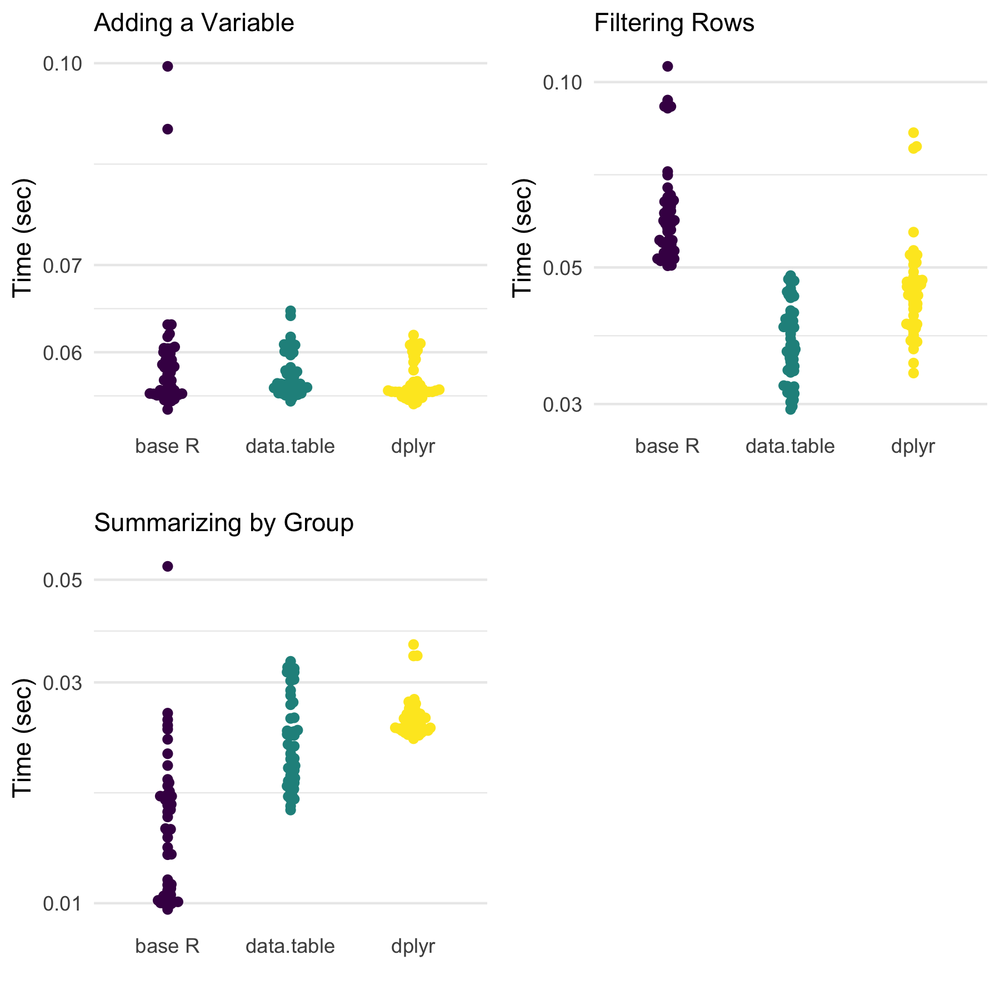
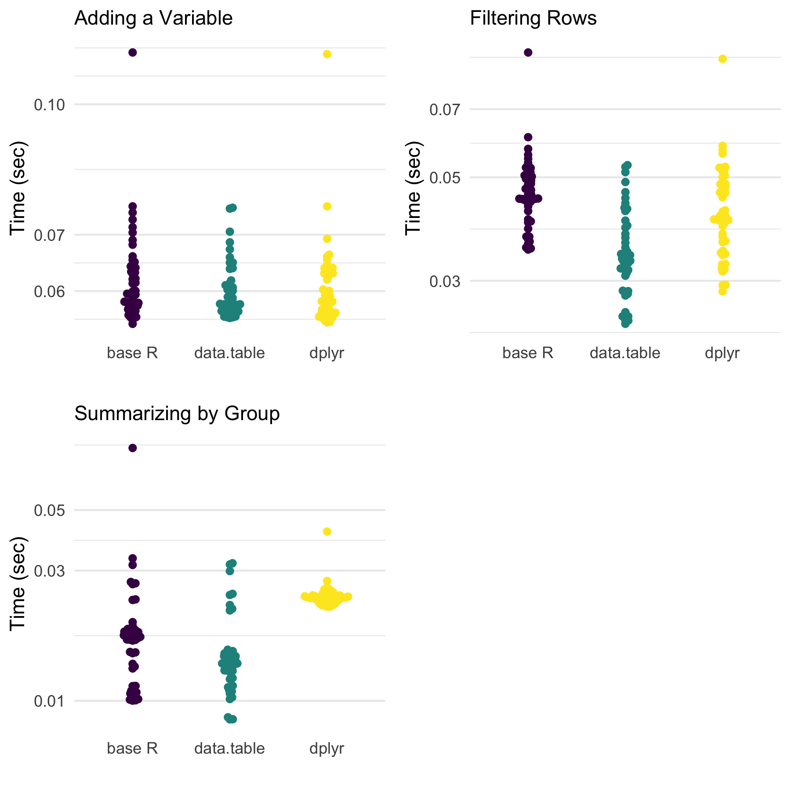

Comparing Efficiency and Speed of data.table: Adding variables, filtering rows, and summarizing by group
data.table package to do some of my data wrangling. It has been a fun adventure (the nerd type of fun). This was made more meaningful with the renewed development of the dtplyr package by Hadley Wickham and…
As of late, I have used the data.table package to do some of my data wrangling. It has been a fun adventure (the nerd type of fun). This was made more meaningful with the renewed development of the dtplyr package by Hadley Wickham and co. I introduce some of the different behavior of data.table here.
This post is designed to help me understand more about how data.table works in regards to memory and speed. This will assess the modify-by-reference behavior as compared to the modify-by-copy that Hadley references in Advanced R’s memory chapter.
I want to emphasize that this post is not to say one approach is better than another. My opinion is use what works for you. Ultimately, this is why I am trying to understand the basic behavior of data.table, dplyr, and base R to do basic data manipulation—to understand when different tools are going to be more useful to me.
Throughout this post, I use the terms efficient and speed.
- Efficient: refers to how much memory is used to perform a function.
- Speed: refers to how quickly the function runs.
We’ll be assessing these two things to understand more about data.table and dplyr (as well as base R).
TL;DR
In cases of adding a variable, filtering rows, and summarizing data, both dplyr and data.table perform very well.
- Base R,
dplyr, anddata.tableperform similarly when adding a single variable to an already copied data set. data.tableis very efficient and quick in filtering.dplyrshows great memory efficiency in summarizing, whiledata.tableis generally the fastest approach.
If you want the specifics, continue on :)
Packages
First, we’ll use the following packages to further understand R, data.table, and dplyr. Notably, data.table by default on my computer will use 4 threads (a form of parallelization). I use this default throughout the post.
library(bench) # assess speed and memory
library(data.table) # data.table for all of its stuff
library(dplyr) # compare it to data.table
library(lobstr) # assess the process of R functionsAnd we’ll set a random number seed.
set.seed(84322)Example Data
We’ll use the following data table for this post.
d <- data.table(
grp = sample(c(1,2,3), size = 1e6, replace = TRUE) %>% factor,
x = rnorm(1e6),
y = runif(1e6)
)
d## grp x y
## 1: 1 -0.38947156 0.54057612
## 2: 2 -1.30538661 0.39913045
## 3: 1 -1.31999432 0.31704868
## 4: 1 -0.50988678 0.99807764
## 5: 3 1.95336283 0.14378685
## ---
## 999996: 1 -0.51576465 0.49866080
## 999997: 1 0.97193922 0.07174214
## 999998: 1 -0.06402822 0.98004497
## 999999: 1 -1.78073054 0.51904927
## 1000000: 3 -0.56124894 0.29423306It is roughly 20 MB and has an address of 0x7fc4335f9600. We won’t be using this address later on because we’ll be making copies of this data table, but note that an object has a size and an address on your computer.
Comparisons
Below, I will look at the behavior of data.table (compared to base R and dplyr) regarding:
- Adding a variable
- Filtering rows
- Summarizing data
Let’s start with the base approaches.
Base R
The following functions perform, in order, 1) adding a variable, 2) filtering rows, and 3) summarizing data by group using base functionality.
base_mutate <- function(data){
data$z <- rnorm(1e6)
data
}
base_filter <- function(data){
data[data$grp == 1, ]
}
base_summarize <- function(data){
tapply(data$x, data$grp, mean)
}dplyr
Again, the following functions perform, in order, 1) adding a variable, 2) filtering rows, and 3) summarizing data by group using dplyr functions.
dplyr_mutate <- function(data){
mutate(data, z = rnorm(1e6))
}
dplyr_filter <- function(data){
filter(data, grp == 1)
}
dplyr_summarize <- function(data){
summarize(group_by(data, grp), mean(x))
}data.table
dt_mutate <- function(data){
data[, z := rnorm(1e6)]
}
dt_filter <- function(data){
data[grp == 1]
}
dt_summarize <- function(data){
data[, mean(x), by = "grp"]
}Copies to Benchmark
The data below are copied in order to make the benchmarking more comparable.
df <- copy(d) %>% as.data.frame()
tbl <- copy(d) %>% as_tibble()
dt <- copy(d)Benchmarking
The following benchmarking tests each situation for the three approaches.
# Adding a variable
bench_base_m <- bench::mark(base_mutate(df), iterations = 50)
bench_dplyr_m <- bench::mark(dplyr_mutate(tbl), iterations = 50)
bench_dt_m <- bench::mark(dt_mutate(dt), iterations = 50)
# Filtering rows
bench_base_f <- bench::mark(base_filter(df), iterations = 50)
bench_dplyr_f <- bench::mark(dplyr_filter(tbl), iterations = 50)
bench_dt_f <- bench::mark(dt_filter(dt), iterations = 50)
# Summarizing by group
bench_base_s <- bench::mark(base_summarize(df), iterations = 50)
bench_dplyr_s <- bench::mark(dplyr_summarize(tbl), iterations = 50)
bench_dt_s <- bench::mark(dt_summarize(dt), iterations = 50)Memory Usage (Efficiency)
We will visualize the memory allocated for each approach, using ggplot2 and cowplot packages.

Definitely some things worth noting across the approaches.
- There are no meaningful differences when adding a variable.
data.tableis the most efficient when filtering rows.dplyris far more efficient when summarizing by group whiledata.tablewas the least efficient.
Speed
Below, we next look at the speed of each approach. Notably, this is on data that has not been sorted in any way prior to the data manipulations.

When it comes to speed, data.table is either the quickest or similarly quick to one or both of the others. Notably, though, dplyr is usually very close, and often is base R as well for these three situations. However, in light of these findings, one should consider the way the output is organized. Base R (using tapply()) provides a named vector while data.table and dplyr provide data frames (or extensions). This may play a role in the speed results we see here.
Update: What if we sort first?
Michael linked the following post by Brodie, reminding me of the drastic effects sorting can have on the speed of the data manipulations.
see also:https://t.co/MMENfBEP2g
— Michael Chirico (@michael_chirico) October 10, 2019
So, let’s sort the data first and see what changes.
df <- copy(d) %>% as.data.frame() %>% .[order(.$grp), ]
tbl <- copy(d) %>% as_tibble() %>% arrange(grp)
dt <- copy(d)
setkey(dt, grp)
# Adding a variable
bench_base_m <- bench::mark(base_mutate(df), iterations = 50)
bench_dplyr_m <- bench::mark(dplyr_mutate(tbl), iterations = 50)
bench_dt_m <- bench::mark(dt_mutate(dt), iterations = 50)
# Filtering rows
bench_base_f <- bench::mark(base_filter(df), iterations = 50)
bench_dplyr_f <- bench::mark(dplyr_filter(tbl), iterations = 50)
bench_dt_f <- bench::mark(dt_filter(dt), iterations = 50)
# Summarizing by group
bench_base_s <- bench::mark(base_summarize(df), iterations = 50)
bench_dplyr_s <- bench::mark(dplyr_summarize(tbl), iterations = 50)
bench_dt_s <- bench::mark(dt_summarize(dt), iterations = 50)
Both filtering and summarizing are faster for data.table without much change for base R or dplyr approaches.
Update 2: Memory Profiling to understand the behvior of dplyr and data.table in summarizing by group
The GitHub gist highlights the code and output.
Conclusion
These results are preliminary and interesting. I am curious as to how dplyr is so efficient when it comes to summarizing data by group. data.table is supposed to be quick (and it is) but both base R and dplyr aren’t exactly slow for these situations.
Ultimately, the reasons why dplyr was so efficient, and why data.table is so good at filtering are things I’d love to learn more about. Be on the look out for future posts discussing this!
Session Information
Note the package information for these analyses.
sessioninfo::session_info()## ─ Session info ──────────────────────────────────────────────────────────
## setting value
## version R version 3.6.1 (2019-07-05)
## os macOS Mojave 10.14.6
## system x86_64, darwin15.6.0
## ui X11
## language (EN)
## collate en_US.UTF-8
## ctype en_US.UTF-8
## tz America/Denver
## date 2019-10-10
##
## ─ Packages ──────────────────────────────────────────────────────────────
## package * version date lib source
## assertthat 0.2.1 2019-03-21 [1] CRAN (R 3.6.0)
## backports 1.1.5 2019-10-02 [1] CRAN (R 3.6.0)
## beeswarm 0.2.3 2016-04-25 [1] CRAN (R 3.6.0)
## bench * 1.0.4 2019-09-06 [1] CRAN (R 3.6.0)
## cli 1.1.0 2019-03-19 [1] CRAN (R 3.6.0)
## colorspace 1.4-1 2019-03-18 [1] CRAN (R 3.6.0)
## cowplot * 1.0.0 2019-07-11 [1] CRAN (R 3.6.0)
## crayon 1.3.4 2017-09-16 [1] CRAN (R 3.6.0)
## data.table * 1.12.4 2019-10-03 [1] CRAN (R 3.6.1)
## digest 0.6.21 2019-09-20 [1] CRAN (R 3.6.0)
## dplyr * 0.8.3 2019-07-04 [1] CRAN (R 3.6.0)
## ellipsis 0.3.0 2019-09-20 [1] CRAN (R 3.6.0)
## evaluate 0.14 2019-05-28 [1] CRAN (R 3.6.0)
## ggbeeswarm 0.6.0 2017-08-07 [1] CRAN (R 3.6.0)
## ggplot2 * 3.2.1 2019-08-10 [1] CRAN (R 3.6.0)
## glue 1.3.1 2019-03-12 [1] CRAN (R 3.6.0)
## gtable 0.3.0 2019-03-25 [1] CRAN (R 3.6.0)
## htmltools 0.4.0 2019-10-04 [1] CRAN (R 3.6.0)
## knitr 1.25 2019-09-18 [1] CRAN (R 3.6.0)
## labeling 0.3 2014-08-23 [1] CRAN (R 3.6.0)
## lazyeval 0.2.2 2019-03-15 [1] CRAN (R 3.6.0)
## lifecycle 0.1.0 2019-08-01 [1] CRAN (R 3.6.0)
## lobstr * 1.1.1 2019-07-02 [1] CRAN (R 3.6.0)
## magrittr 1.5 2014-11-22 [1] CRAN (R 3.6.0)
## munsell 0.5.0 2018-06-12 [1] CRAN (R 3.6.0)
## pillar 1.4.2 2019-06-29 [1] CRAN (R 3.6.0)
## pkgconfig 2.0.3 2019-09-22 [1] CRAN (R 3.6.0)
## profmem 0.5.0 2018-01-30 [1] CRAN (R 3.6.0)
## purrr 0.3.2 2019-03-15 [1] CRAN (R 3.6.0)
## R6 2.4.0 2019-02-14 [1] CRAN (R 3.6.0)
## Rcpp 1.0.2 2019-07-25 [1] CRAN (R 3.6.0)
## rlang 0.4.0 2019-06-25 [1] CRAN (R 3.6.0)
## rmarkdown 1.16 2019-10-01 [1] CRAN (R 3.6.0)
## scales 1.0.0 2018-08-09 [1] CRAN (R 3.6.0)
## sessioninfo 1.1.1 2018-11-05 [1] CRAN (R 3.6.0)
## stringi 1.4.3 2019-03-12 [1] CRAN (R 3.6.0)
## stringr 1.4.0 2019-02-10 [1] CRAN (R 3.6.0)
## tibble 2.1.3 2019-06-06 [1] CRAN (R 3.6.0)
## tidyr 1.0.0 2019-09-11 [1] CRAN (R 3.6.0)
## tidyselect 0.2.5 2018-10-11 [1] CRAN (R 3.6.0)
## vctrs 0.2.0 2019-07-05 [1] CRAN (R 3.6.0)
## vipor 0.4.5 2017-03-22 [1] CRAN (R 3.6.0)
## viridisLite 0.3.0 2018-02-01 [1] CRAN (R 3.6.0)
## withr 2.1.2 2018-03-15 [1] CRAN (R 3.6.0)
## xfun 0.10 2019-10-01 [1] CRAN (R 3.6.0)
## yaml 2.2.0 2018-07-25 [1] CRAN (R 3.6.0)
## zeallot 0.1.0 2018-01-28 [1] CRAN (R 3.6.0)
##
## [1] /Library/Frameworks/R.framework/Versions/3.6/Resources/library